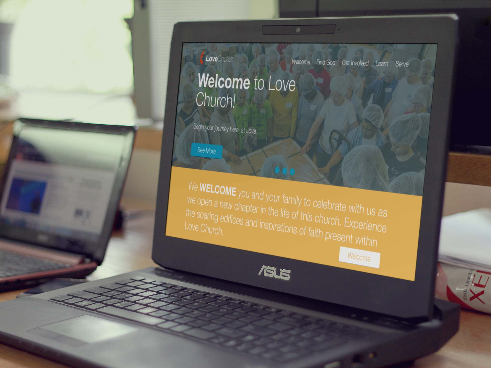

{kind=link}
Church Website Design
Creating website designs has become my passion throughout the years, and I was able to have an awesome opportunity when I was asked to design a template for a church website company. At this point in my career I was beginning to dig deeper into creating designs using Adobe Illustrator, and I was able to create a very crisp template design using a minimal layout and color blocks.
Design and Illustrator
SVG, PNG, GIF, JPG—no problem.
Why Adobe Illustrator, and not Adobe Photoshop?
If you're a front-end developer or web designer, I’m not trying to convince you to switch tools. Your workflow may be the best for you. Maybe better than mine, but the way content is evolving on the Web—mobile optimized, leaner, cooler—we have all been taking a long hard look at the tools we use, to see whether they are the best choices for what we need to do.
Illustrator is part of my web workflow for these major reasons:
- Resolution independence
- SVG, PNG, GIF, JPG—no problem
- Hosted and icon fonts
- Pixel perfection (working with grids)
- Wireframe or full-blown design—you decide
- Plays well with raster
- Symbols and other time-saving features
- Existing framework integration
- Extracts CSS
With the current trend for flat, minimal responsive web design, its looking more and more as if Illustrator should be considered a viable option, especially as developers favour vector output such as SVG.
-

I used variations of orange and blue because of their color meanings. Blue was used to show security, trustworthiness, wisdom, and friendliness. Orange was used to show cheerfulness, passion, enthusiasm, and fun.
{kind=link}